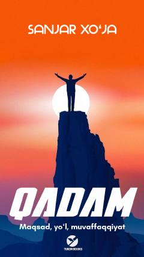

QMMaqsad sari har bir qadam — o'zlikni topish yo'li.
"Qadam" — Sanjar Xo'janing shaxsiy hayotiy tajribasi va sinab ko'rilgan usullar asosida yozilgan o'z-o'zini rivojlantirish kitobi. Kitob maqsad qo'yish, ijobiy fikrlash, matonat va shaxsiyatni shakllantirish mavzularini qamrab oladi. Muallif o'quvchini o'z «men»ini topish va maqsadlariga erishish yo'lida ilhomlantiradi.